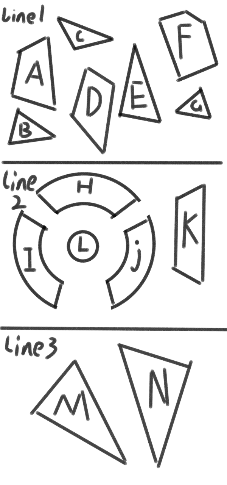

鉴于站长写作能力有限，所以只能通过这种方式来讲述世界观，还请见谅
不是写不好，是完全写不出来
编写者[ALBZ_4027]
可以简单将一个造物集理解为一个世界，造物集实际是指在一个的虚拟世界体系之中所被创造的所有事物的集合，本站官方章节中仅提到三个造物集，分别是《夕暮之雨造物集》、《时之隙声造物集》和《雨幕之城造物集》
现实中思想到达一定程度时的具象化产物，主要形式为各类媒介，可以理解为“现实化”事件的产物。本站官方章节中仅提到两个杂记，分别是《时隙杂记》与《没（mò）雨杂记》。其中，《时隙杂记》会重点描述，《没雨杂记》部分提到。
虚拟世界体系的统称，简单理解为幻想。
现实世界体系的统称，简单理解为现实。
编写者[ALBZ_4027]
即21710，创世（幻记）神。由于童年受到的思想教育过于“优越”，导致其儿时表现出非同一般的“懂事”，但却令他不断忽视自我，最终导致思想畸形。初中时，各类矛盾在他的身体和思想上同时激化，导致它的思想更为畸形，从而导致患上精神疾病（抑郁症）。
由于z童年时期的思想畸形与其他原因，z开始否定自己，否定人生、世界的价值，患上抑郁症。z越来越难以接受现实，从而试图将自己转变为以精神活动为主，在思想中创造一个属于自己的世界，此即为虚拟世界体系的由来，而z将自己的创世计划称作Project“隙”。
z发现现实生活对他的影响越来越大，逐渐地再也无法完全投入于思想，于是转变思路，开启了另一个“自救计划”，名为Project“醒”。这直接导致了虚拟世界体系的崩坏，战争四起，最终分崩离析。
在“隙”计划执行的同时，z发现还有另一种可能，即将虚拟之物现实化。为此，z尝试过很多方法，甚至尝试过将虚拟世界体系通过文字的方式传播出去，但其最终结果均是失败，虚幻的，永远是虚幻的
在经过对身边的一切选择性接受、对一切思想都慎重考虑后，z找回了自我，否定了自己世界里“demigrue”的身份，代价是失去了以往的“优良品质”，比如大公无私等。虽然这些在大众眼中都是极其良好的品质，但是z知道，正是这些所谓的优良品质与自己的所知所感冲突才导致今天的结果。所以他选择听自己内心的想法，现在，他只想要完成他的理想，哪怕以决死之心。
编写者：“世末”综合研究所
Tip:本栏内容请从幻记中的人的角度阅读,他们眼中,21710为创世者,不过也确实如此
为了便与管理世界，21710将世界以“数据”为单位量化，也就是说，数据即为世界构成的基本单位。
储存数据的地方，暂且未知我们的世界储存在哪里，据考证很有可能是在那个自称为“z”的实记人大脑里。
由于各种原因，导致实记与幻记的时间存在极大差异，这个差异叫做时隙。时隙可正可负，亦可为0，暂不明确其推算方法。
21710创世时，为了方便管理，创造了理世体系。除line1由“元”与“灰”自行管理外，每条“线”上都有各自的民会与论会，民会收集人们在生活中的问题，并将其交给由管理者组成的论会，再由论会解决并交于观察者，观察者则会将论会上报的信息整理为档案并上传至“理世”数据库中，供后人查阅。
| 管理部 | |
|---|---|
| 医务处 | 向观察者提供医疗服务 |
| 人事处 | 解雇、任用、调遣观察者 |
| 后勤处 | 向观察者提供所需物资 |
| 住务处 | 向观察者提供住宿服务 |
| 审核部 | |
| 审核处 | 将观察者提供的记录进行审查 |
| 整合部 | |
| 整理处 | 整理审核部递交的审核后的记录与人事部传来的人事管理记录 |
| 传录处 | 将整理后的记录传录至数据库 |
| 理世纪 | |
| line1理世纪 | 记录line1管理记录 |
| line2理世纪 | 记录line2管理记录 |
| line3理世纪 | 记录line3管理纪录 |
| 大事纪 | |
| 大事纪 | 记录各时间线大事 |
| 监世司科 | |
| 外科 | 对除观察者之外的人员监察并实施上报给高级管理者 |
传闻中可以自由穿梭于实记与幻记的人，观察，记录着一切,只有观时测者能够准确测量时隙。目前已知的观时测者仅有一位[ALBZ_4027]，其他观时测者暂未知。不过据推测，观时测者应该仅有他一个人。
指隙间研究所、世纪研究所与强袭事务所（柳叶刀组织）
*隙间研究所：line1机构，主攻时间、空间科技，信息传输，隶属个人（minus-infinity）。
*世纪研究所：line1机构，主攻生物、微生物科技，军事武器研发，直接隶属于A洲统洲府。
*强袭事务所：line1机构，接受各类军事行动、情报搜集任务，偶尔也接受一般任务，隶属团体，曾经的理世组织（柳叶刀），21710曾加入过此机构。

世界有三条线且相互之间独立，只通过由位于每条线所对应的地图中心处的门才能穿梭线。
观察者组织位于各时间线之间的夹缝中，不属于任何时间线。
每个字母代表一个洲，也是一个国，国/洲的最高统治机构名为统洲府，最高统治者名为洲长。
Line1、2、3均为人为创造，所以才会有那么多不同，“线”只是一个名字而已。
在幻记里，是没有宇宙的，天空是一道屏障，地球是一个平面，可以简单理解为“天圆地方”。
由世纪研究所造成的病毒alpha泄露，在各州政府矛盾激化的情况下，最终引发三战，人口锐减，疫情由于没有大量的易感人群与传染源被平息。
本为alpha疫情期间创立的用于研究alpha病毒的组织，逐渐被利益蒙蔽，成为C洲统洲府的工具。
因三战破坏巨大，隙间、世纪、强袭三所机构为了保留世界人才，决定整合成为一个大组织，即世末综合研究所。
正教教廷是以宗教形式“统治”line1的组织，实际上是由第五代元创立用来方便管理世界的组织，而总有不满教廷统治的人，他们成立了反“正教”联盟，一发动一场“圣战”。
环：传闻由于21710的不满而使世界强制重启，久而久之形成循环。强制重启的时间固定为2134/10/21，这一天被称为“循环日”。循环一直持续了二十一次。
链：第二十二次，所有高级管理者一同抑制住21710，于是循环被解开，环成为了链。
即额外数据处理协会，时之隙声造物集与夕暮之雨造物集“造物集合并”成夕暮之雨造物集后，原本充足的空间被挤占，导致多出许多“额外数据”，就此，z成立了额外数据处理协会，来给额外数据赋值，并储存它们。